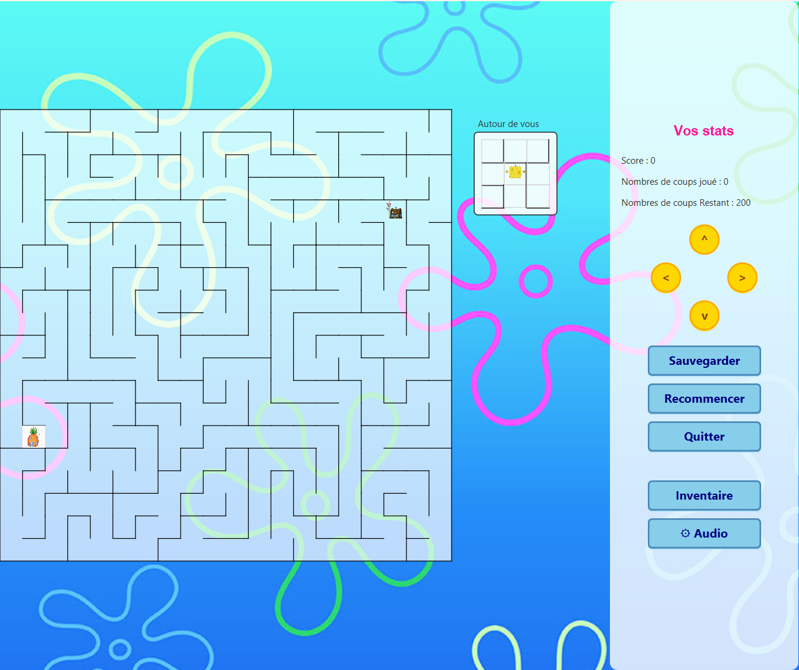
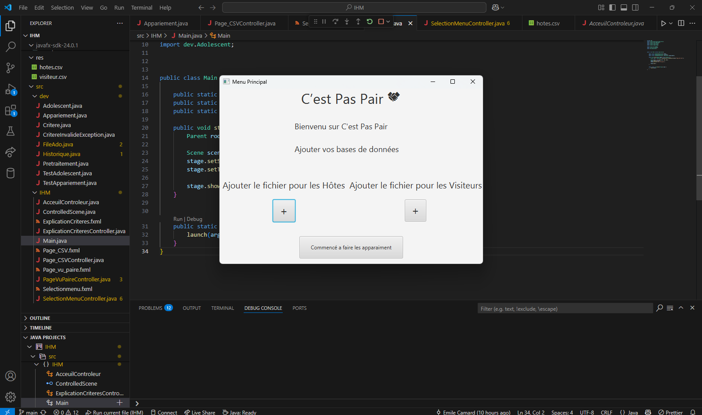
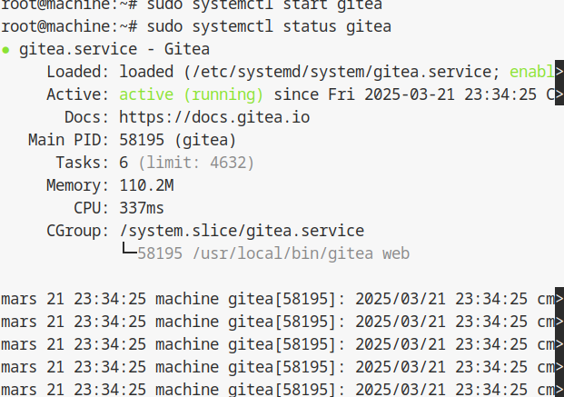
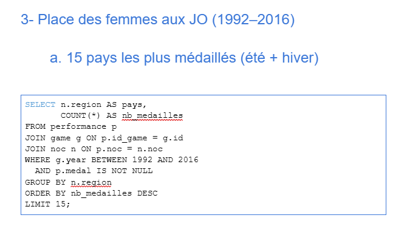

.jpg)
Parcours
BUT Informatique — Université de Lille (2023–2026)
Formation centrée sur le développement logiciel, l’algorithmique, la programmation orientée objet, l’administration systèmes et réseaux, la gestion de bases de données et la conduite de projet.
Réalisation de nombreux projets pratiques détaillés dans les sections ci-dessous (développement web, applications Java, bases de données, modélisation, robotique, et plus).
Lycée La Salle Lille
Baccalauréat Général — Mention Bien
Spécialités : Mathématiques & Numérique et Sciences Informatiques (NSI)
Expérience
Stage de seconde — 3Axes Institut (2022)
Découverte des métiers de l’informatique et du jeu vidéo. Initiation aux outils de création numérique (Photoshop, Blender) et observation des workflows de production graphique et 3D.
Stage de 3ème — Institut d’Éducation Motrice Jules Ferry (2021)
Participation à l’accompagnement d’enfants en situation de handicap moteur avec troubles neuro-développementaux. Observation de séances de rééducation (orthophonie, ergothérapie, kinésithérapie, équithérapie). Découverte d’un environnement pluridisciplinaire centré sur l’accompagnement humain.
Compétences
Développement
- Java (POO, JavaFX, fichiers CSV)
- HTML / CSS
- SQL (requêtes et modélisation)
- Bases de l’algorithmique (optimisation, graphes…)
Systèmes & Outils
- Linux / Debian — Administration système, VM
- VirtualBox
- Terminal & Shell scripting
Gestion de projet & Communication
- Git / GitHub / GitLab
- Travail en équipe
- Rédaction technique
- Organisation et suivi de projet
- Utilisation méthode agile (scrum)
Mes projets
Semestre 3
SAÉ 3.02 — Labyrinthes
Développement d’un jeu de labyrinthe en Java avec modes libre et progression.

Résumé du projet
Le projet consistait à développer un jeu de labyrinthe en Java, destiné à proposer deux modes de jeu : le Mode Libre, où le joueur choisit la taille du labyrinthe et le pourcentage de murs, et le Mode Progression, avec des étapes de difficulté croissante et des défis spécifiques. Nous avons implémenté des labyrinthes aléatoires et parfaits en utilisant des structures de données optimisées et des algorithmes tels que DFS et BFS pour garantir l’accessibilité et la distance minimale entre l’entrée et la sortie. L’interface a été réalisée en JavaFX, avec gestion des déplacements au clavier, affichage dynamique et intégration d’une boutique où le joueur peut acheter des bonus. Pour enrichir l’expérience, nous avons également ajouté un thème Bob l’Éponge et des éléments graphiques interactifs. Ce projet nous a permis de combiner des compétences en algorithmique, structures de données, programmation orientée objet, développement d’interface graphique et gestion de projet en équipe.
Compétences techniques développées
- Programmation en Java orientée objet et JavaFX
- Conception et implémentation d’algorithmes (génération et parcours de labyrinthe)
- Structuration de données (grilles, cellules, cartes)
- Gestion de projet en équipe avec Git et GitLab
- Tests unitaires et validation fonctionnelle des fonctionnalités
- Création et lecture de fichiers CSV pour le suivi des joueurs
Savoir-être et compétences transversales
- Travail collaboratif et coordination d’équipe
- Organisation et planification des tâches
- Communication efficace entre membres et suivi du projet
- Résolution de problèmes et adaptation face aux difficultés techniques
Outils et méthodes
- Java, IntelliJ IDEA / Visual Studio Code
- JavaFX pour l’interface graphique
- Git / GitLab pour le versioning
- Google Docs, Figma, Canva pour la collaboration et les maquettes
SAÉ 3.03 — Déploiement d’application (Matrix)
Mise en place d’une infrastructure complète de communication basée sur le protocole Matrix.

Résumé du projet
Le projet consistait à déployer une infrastructure complète basée sur le protocole Matrix, incluant un serveur Synapse, une base de données PostgreSQL et une interface web Element. L’objectif était de mettre en production une solution de communication sécurisée et fonctionnelle, en utilisant uniquement des compétences en administration système et réseau. Nous avons travaillé sur des machines virtuelles Linux accessibles à distance via SSH, sans interface graphique, ce qui nous a permis de maîtriser l’environnement en ligne de commande. Le projet s’est déroulé en plusieurs étapes : configuration réseau, installation des services, mise en place d’un reverse proxy avec Nginx et sécurisation de l’ensemble. Cette SAÉ nous a permis de comprendre le fonctionnement global d’une infrastructure web et les enjeux liés à la mise en production d’un service.
Compétences techniques développées
- Administration système Linux (services, logs, utilisateurs)
- Déploiement et configuration de services (Synapse, PostgreSQL, Nginx)
- Gestion de machines virtuelles et accès distant via SSH
- Configuration réseau (IP statiques, DNS, segmentation)
- Utilisation de systemctl et journalctl pour gérer et diagnostiquer les services
- Mise en place d’un reverse proxy et sécurisation des communications
Savoir-être et compétences transversales
- Travail en équipe et coordination sur un projet technique
- Organisation et suivi des différentes étapes du déploiement
- Rédaction de documentation technique claire et structurée
- Autonomie dans l’apprentissage de nouveaux outils
- Résolution de problèmes et gestion des erreurs système
Outils et méthodes
- Linux (Debian / Ubuntu)
- SSH pour l’administration à distance
- Synapse (serveur Matrix) et Element Web
- PostgreSQL pour la base de données
- Nginx comme reverse proxy
- Machines virtuelles (VirtualBox / environnement IUT)
- Markdown, GitLab pour le suivi et la documentation
Semestre 2
SAÉ 2.01 / 2.02 — Séjours linguistiques
Outil d’aide à la décision pour l’organisation de séjours linguistiques.

Résumé du projet
Le projet consiste à développer un outil informatique permettant d’optimiser l’organisation de séjours linguistiques entre plusieurs pays européens (France, Italie, Espagne, Allemagne). L’objectif est de trouver le meilleur appariement entre adolescents hôtes et visiteurs en tenant compte de contraintes rédhibitoires (allergies, incompatibilités) et de préférences personnelles (hobbies, genre, âge). L’application repose sur des algorithmes d’optimisation modélisés en graphe, une interface graphique en JavaFX, et une architecture orientée objet en Java. Le projet mobilise des notions de modélisation UML, traitement de fichiers CSV, structures de données et gestion rigoureuse de projet via Git.
Compétences développées
- Développement d’applications Java avec tests unitaires.
- Implémentation d’algorithmes d’appariement sur graphes pondérés.
- Traitement et analyse de données via fichiers CSV.
- Développement d’une IHM interactive en JavaFX.
- Modélisation UML et conception orientée objet.
Savoir-être requis
- Capacité à travailler en groupe sur plusieurs semaines.
- Communication efficace et gestion des imprévus.
- Organisation, rigueur et respect des délais.
Savoir-faire non informatiques
- Organisation du travail en équipe, répartition des rôles et suivi d’avancement.
- Rédaction hebdomadaire d’un rapport pour suivre l’évolution du projet.
- Application de principes d’ergonomie et prise en compte des retours utilisateurs.
SAÉ 2.03 — VM Debian automatisée
Automatisation complète de l'installation d'une machine virtuelle Debian.

Résumé du projet
Le projet consistait à configurer une machine virtuelle Debian en comprenant chaque étape, depuis l’installation manuelle jusqu’à l’automatisation complète. Après la création d’une VM dans VirtualBox, l’équipe a procédé à l’installation du système, à la configuration des logiciels essentiels et de l’environnement graphique. Une fois les manipulations réalisées manuellement, celles-ci ont été automatisées via des scripts shell. Un rapport en Markdown documente chaque étape, les choix techniques, les problèmes rencontrés et les solutions mises en place, afin de permettre de reproduire l’installation de manière fiable.
Compétences développées
- Virtualisation et gestion de machines virtuelles (VirtualBox).
- Installation et automatisation d’un système Linux (Debian).
- Maîtrise du terminal et des commandes Linux.
- Rédaction d’un rapport technique en Markdown.
(Contient scripts, rapports et documents nécessaires.)
Savoir-être
- Travail d’équipe, coordination et communication.
- Autonomie dans la résolution de problèmes techniques.
- Gestion du temps et respect des échéances.
SAÉ 2.04 — Jeux Olympiques
Analyse, modélisation et visualisation de données des Jeux Olympiques.

Résumé du projet
La SAÉ 2.04 consistait à analyser un ensemble de données réelles liées aux Jeux Olympiques. Le projet incluait la normalisation d’une base de données, l’écriture de requêtes SQL, ainsi que la réalisation d’analyses statistiques et de visualisations. En raison d’une fuite du corrigé de la partie statistique, le projet n’a pas pu être mené entièrement, limitant la mise en application des compétences prévues.
Compétences développées
- Rédaction et exécution de requêtes SQL sur une base relationnelle.
- Modélisation et normalisation de données.
- Analyses statistiques descriptives.
- Création et interprétation de graphiques.
- Production d’un rapport structuré et critique.
Savoir-être
- Travail en binôme et répartition efficace des tâches.
- Rigueur dans la gestion et la présentation des données.
SAÉ 2.05 — JobyFind
Application web et mobile de mise en relation entre candidats et recruteurs.

Présentation du projet :
Ce projet nous a permis de développer de nombreuses compétences en gestion de projet et en travail d’équipe. Nous avons appris à organiser notre travail en répartissant les rôles et en respectant des délais grâce à des outils comme le diagramme de Gantt. La création de l’application JobyFind nous a aussi permis de stimuler notre créativité et notre esprit d’innovation. Nous avons travaillé sur l’analyse d’un besoin réel, ce qui nous a aidés à mieux comprendre les attentes du marché et des utilisateurs. Ce projet nous a également permis de développer des compétences en communication, notamment pour présenter nos idées de manière claire et convaincante. Nous avons appris à réaliser une étude de marché, à identifier une clientèle cible et à analyser la concurrence. De plus, nous avons abordé des notions commerciales et financières, comme le financement et la stratégie de distribution. Ce travail nous a aussi appris à collaborer efficacement, à écouter les idées des autres et à prendre des décisions en groupe. Enfin, cette SAE nous a permis de mieux comprendre les différentes étapes de création d’un projet, de l’idée initiale jusqu’à sa présentation finale.
Savoir-être développés :
• Travail en équipe et communication efficace
• Esprit d’initiative et autonomie dans la gestion des tâches
Autres compétences non informatiques :
• Analyse de marché (PESTEL, étude concurrentielle)
• Création de supports professionnels (pitch deck, plaquette)
• Élaboration d’une stratégie financière et commerciale
SAÉ 2.06 — Vidéo de vulgarisation scientifique
Production d’une vidéo pédagogique complète.
Résumé du projet
Le projet consistait à concevoir et réaliser une vidéo pédagogique expliquant un concept informatique : la génération procédurale dans les jeux vidéo. L’objectif était de vulgariser un sujet technique auprès d’un public non expert, tout en garantissant la qualité scientifique et la rigueur du contenu. Nous avons mobilisé des compétences en recherche documentaire, rédaction de scénario, narration audiovisuelle et montage vidéo. Les connaissances mobilisées incluaient les algorithmes de génération procédurale (bruit de Perlin, marche aléatoire), les principes de game design, et l’utilisation d’outils collaboratifs comme Google Drive et GitHub. Une attention particulière a été portée à l’expression orale pour réaliser une voix-off claire et engageante.
Compétences développées
- Recherche, compréhension et vulgarisation d’un concept informatique complexe.
- Écriture d’un scénario pédagogique adapté à la vidéo.
- Montage vidéo, enregistrement et traitement de voix-off.
- Utilisation d’outils collaboratifs (Google Drive, GitHub).
- Compréhension des algorithmes de génération procédurale.
Livrable
Vidéo finale disponible ici : Vidéo de vulgarisation — Génération procédurale
Savoir-être requis
- Collaboration efficace et répartition équitable des tâches.
- Organisation, autonomie et respect des délais.
Savoir-faire non informatiques
- Écriture et structuration d’un discours oral (voix-off).
- Création d’un scénario visuel et choix pertinents d’illustrations.
- Analyse critique de vidéos existantes pour identifier les bonnes pratiques de vulgarisation.